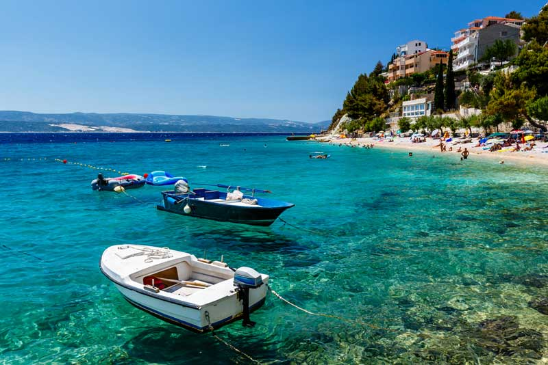
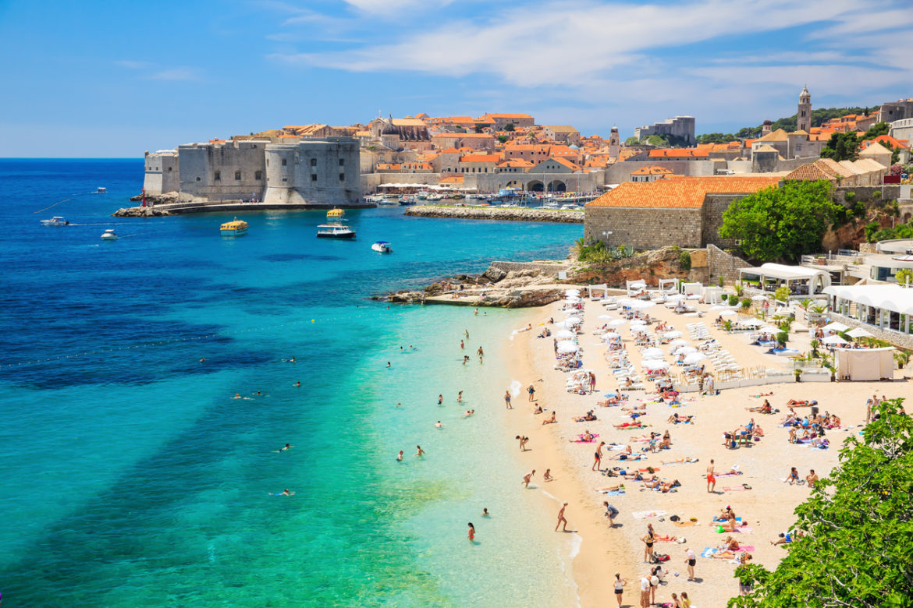
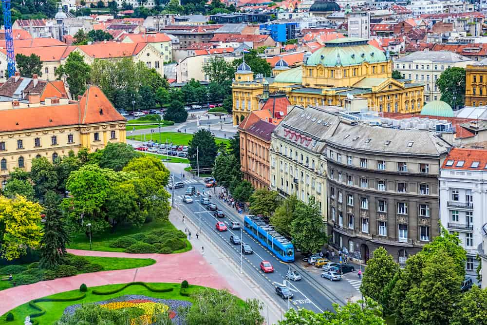

<div class="container project-view">
    
	<div class="row">
        <div class="col-md-4 project-images" align="center">
            
		</div>
		
        <div class="col-md-4 project-images" align="center">
            
		</div>

        <div class="col-md-4 project-images" align="center">
            
		</div>
		

 		<div class="col-md-12">
            <div class="project-info">
                <h2>Croatia 7N 8D - Countryside &amp; Island Hopping</h2>

                <div class="details">

                    <div class="info-text">
                        <span class="title">Category</span>
                        <span class="val">Honeymoon</span>
                    </div>
                    
                    <div class="info-text">
                        <span class="title">Price</span>
                        <span class="val">INR 1,68,000 per couple</span>
                    </div>

                    <div class="info-text">
                        <span class="title">Inclusions</span>
                        <span class="val">Accomodation, Breakfast, Hotel Transfers, Sightseeing &amp; entry fees to Plitvice Lakes National Park, as per Itinerary</span>
                    </div>
                    
                </div>

				<span class="val">Itinerary</span>
				
				<br/><br/>
				Day 1: Zagreb: Arrive at Zagreb Airport and transfer to a hotel in Zagreb for an overnight stay.

				<br/><br/>
				
				Day 2: Zagreb: After breakfast at the hotel, enjoy a guided encounter with Croatia’s largest city. With an air of a true European capital, 
				Zagreb charms with its baroque facades and spiffy towers, green parks and open-air terraces, quiet courtyards and bustling streets. 
				Between its historic Upper town and urban lower town, spot landmarks like the Church of St. Mark with its colorful roof, the Cathedral and the National Theatre. 
				Continue exploring on your own in the afternoon. Overnight in Zagreb (B)

				<br/><br/>

				Day 3: Zagreb – Split: Breakfast at the Hotel. The first visit of the day takes you to Croatia’s most popular natural gem, the Plitvice Lakes. 
				A guided walk around the wooden pathways unveils an amazing world of 16 cascading lakes interlaced with over 90 stunning waterfalls, bound to mesmerize you in any season. 
				Continuing the drive to Split, take a break in Trogir, UNESCO-listed World Heritage site. A bundle of narrow atmospheric streets which twist and bend between houses, palaces and churches, 
				the heritage of Trogir is rooted in the Greek and Roman times and showcases some of the finest architectural works in Croatia, including the incredibly intricate portal of its Cathedral, 
				the Town Loggia and the Cipiko palace. Arrive to Split and spend overnight in Split/Split area. (B)

				<br/><br/>

				Day 4: Split – Hvar: After breakfast at the hotel, set out on a late morning walking tour of Split. Dalmatia’s largest coastal town bustles and buzzes, as it grows more and 
				more popular among travelers for its easy-going spirit, creative food and shopping scene and of course, remarkable heritage. Learn about the Diocletian’s Palace, 
				once the Roman Emperor’s retirement estate and today a lively city center housing 3,000 people! 
				Finally, enjoy a ferry or catamaran ride from Split to the neighboring island of Hvar where you will spend the night at a hotel in the glitzy town of Hvar (B)

				<br/><br/>

				Day 5: Hvar: Breakfast at the hotel. The island of Hvar is known for its purple lavender fields, a backdrop for oil production, potent red wines from 
				steep vineyards especially enjoying the island’s status as Croatia’s sunniest island, and the glitzy jet-set scene along the starlit waterfronts of the town of Hvar, 
				so often featured in national and international summer media. In your morning walking tour, explore the island’s prime gem and its most trendy destination, the town of Hvar. 
				Home to the oldest theatre in Europe, also the home of organized tourism in Croatia, the heritage of Hvar extends far beyond the popular party scene! 
				Enjoy the rest of the day at leisure. Overnight in Hvar (B)

				<br/><br/>

				Day 6: Hvar – Korcula: Enjoy a breakfast at the hotel and some time on your own. Hvar is known for diverse opportunities, from bustling squares of Hvar town 
				to the serene waterfront of Jelsa, the bridges of Vrboska and vineyards of Ivan Dolac, so expect time to fly. In the afternoon, bid farewell to Hvar and 
				hop on a boat to take you to the neighboring island of Korčula. Arrive in the evening and enjoy an overnight stay in Korčula (B)

				<br/><br/>

				Day 7: Korcula – Dubrovnik: Breakfast at the hotel. The far south of Croatia holds many gems. You’ll know Korčula was a Venetian stronghold as soon as you 
				lay your eyes on the many lion statues which lurk at you from the town’s facades and gates, intertwined with some of the most outstanding stonework you will get see anywhere on the Adriatic coast. 
				Stroll the narrow, curved streets, marvel at beautiful churches and magnificent palaces in one of the best preserved medieval towns in the Mediterranean. 
				Early in the afternoon, cruise to Dubrovnik, which once successfully rivaled the Venetian Republic. Arrival to Dubrovnik for overnight stay (B)

				<br/><br/>
				Day 8 Dubrovnik: Following breakfast, bid farewell to Dubrovnik and enjoy a scenic transfer to Dubrovnik Airport. End of program. (B)

				<br/><br/>
				<br/><br/>


				<span class="val">Cancellation Policy</span>
				<br/><br/>

				In the event of any cancellation following charges will be applicable: 
				Within 32-25 days prior to departure: 20% of the package cost. 
				Within 24-17 days prior to departure: 55% of the package cost. 
				Within 16-11 days prior to departure: 80% of the package cost. 
				Less than 10 days prior to departure OR No show: 100% of the package cost 

            </div>
        </div>
    </div>
</div>